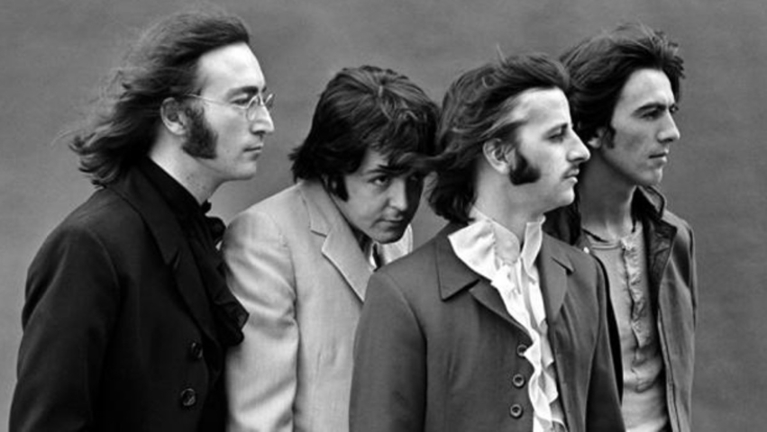

The Beatles were an English rock band, formed in Liverpool in 1960. With members John Lennon, Paul McCartney, George Harrison and Ringo Starr, they became widely regarded as the foremost and most influential act of the rockera. In the early 1960s, their enormous popularity first emerged as "Beatlemania", which is a term that describe the intense fan frenzy directed toward the British band. The phenomenon began in 1963 and continued past the band's breakup in 1970.
On Feb. 7, 1964, the Beatles arrived at newly named John F. Kennedy airport in Queens, N.Y. to a surprisingly shocking mob of screaming fans and reporters. With their mop-top hair, British humor and catchy music — John, Paul, George and Ringo were something new and fresh that Americans hadn't seen or heard before.
Musician, singer and songwriter Keith Richards was born on December 18, 1943, in Dartford, England. Richards is one of the driving forces behind the Rolling Stones, the self-proclaimed "World's Greatest Rock and Roll Band." One early influence on the future rhythm guitarist was his grandfather, a musician and bandleader